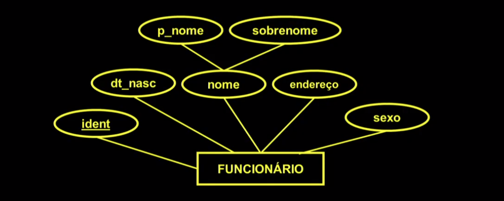
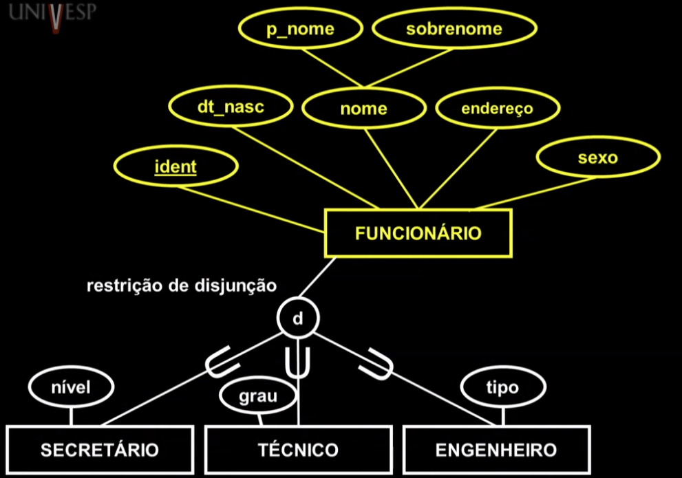
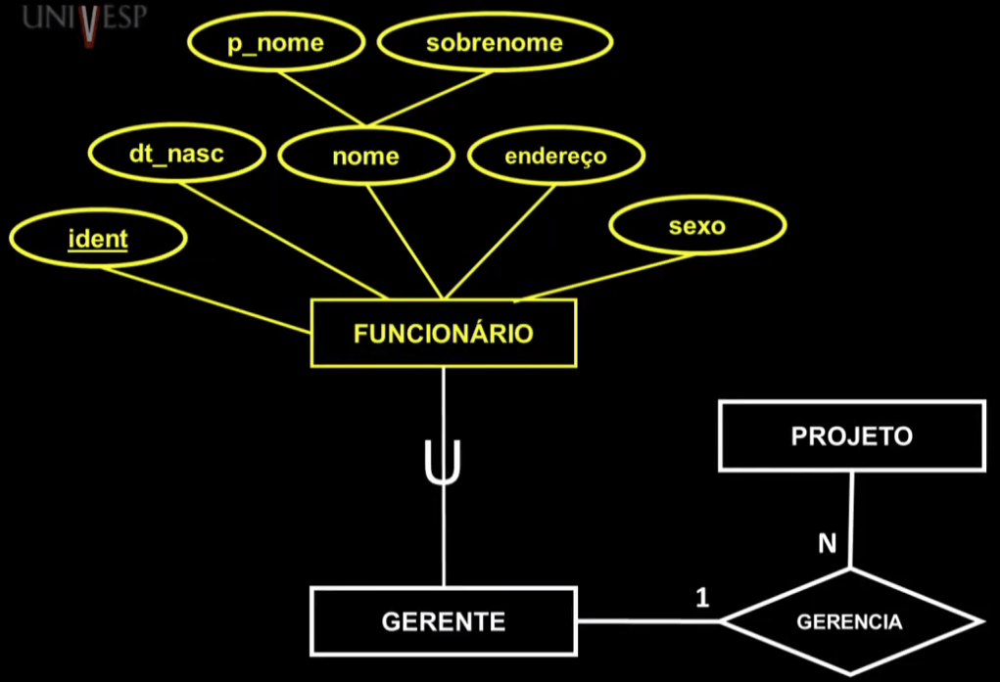
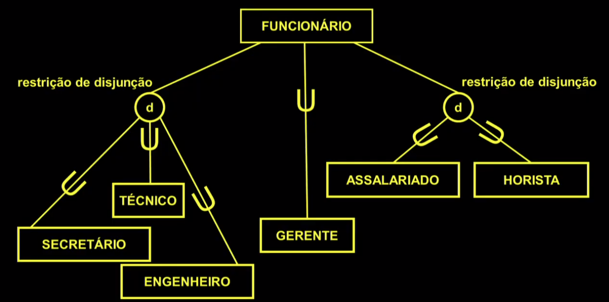
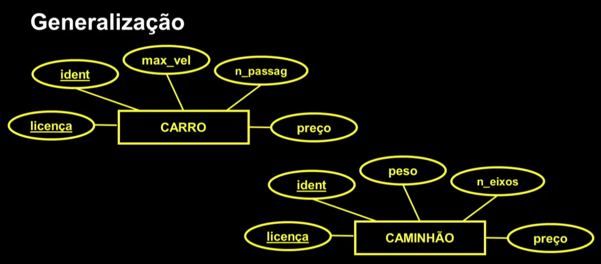
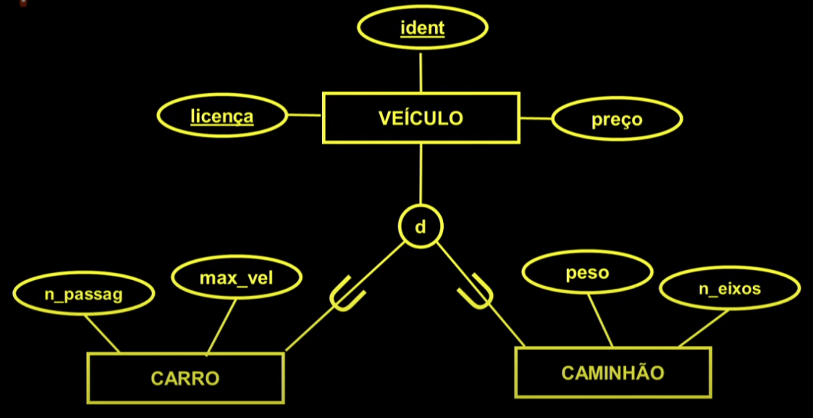
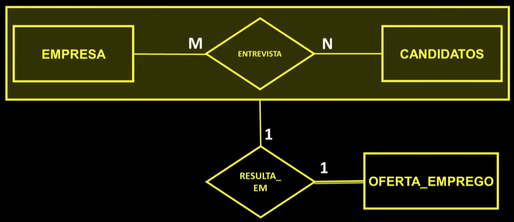
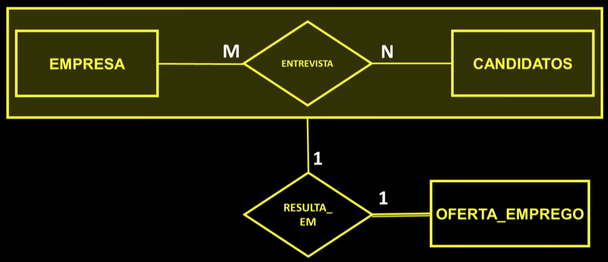

Disciplinas
-
BANCO DE DADOS-T01-2024-1 Concluído
Materiais
Vídeo 3 - Bancos de Dados - Aula 04 – Modelo Entidade - Relacionamento estendido. sendProfessor ministrante: Sarajane Peres.
Conteúdo
Modelo Entidade - Relacionamento estendido.
- especialização-generalização, agregação.
Modelo Entidade - Relacionamento estendido.
modelo de dados conceitual mais acurado, capaz de expressar propriedades e restrições dos dados com maior precisão.
- Características discutidas neste curso:
- especialização-generalização.
- agregação.
Especialização: processo de definir um conjunto de subtipos (ou subclasses) de um tipo entidade (supertipo ou superclasse), a partir das características que distinguem subconjuntos de entidades individuais.
Generalização: processo inverso da abstração, no qual as diferenças entre vários tipos entidades são suprimidas na criação de um supertipo.
Especialização:  Restrição de disjunção:  Subconjuntos:  Diagrama resumido – suprimindo os atributos e relacionamentos: Generalização:
 Supertipo(Veículo)  Restrição de SobreposiçãoAgregação:
É uma abstração que permite a construção de objetos a partir de seus componentes.
No MER estendido podemos agregar (combinar) objetos que estão relacionados. A partir dessa agregação, criamos um novo objeto que pode ser tomado como uma entidade de alto nível e pode, portanto, participar de um relacionamento.
Ex:
Relacionamento (Entrevista). Criando Agregação:

Criando Agregação:

Estes slides estão baseados na bibliografia:
Modelo Entidade-Relacionamento estendido especialização-generalização, agregação.